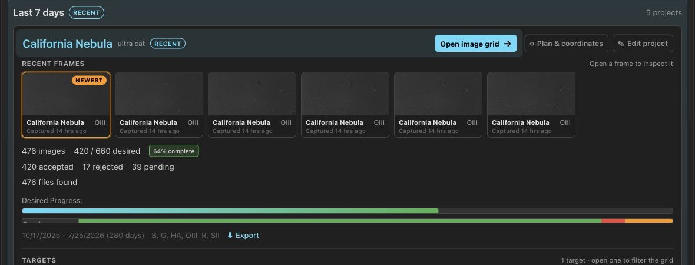

Export for Stacking
Turn reviewed lights and their safely matched calibration frames into a clean stacking input without moving or changing the source files. Export one project or target from Overview, download a ZIP, export in the background on the server, or use the CLI for repeatable batch runs.
Choose a target-grouped tree or a PixInsight WBPP-ready layout.
Choose an export mode
| Where | Result | Best for |
|---|---|---|
| Desktop app | Local folder, hardlinked when possible | Fast export on the grading machine with little extra disk use |
| Browser | Streaming ZIP, or a background server export when a destination is configured | Remote servers and NAS installs |
| CLI | Local folder, copy or hardlink | Automation, filters, dry runs, and repeat exports |
| HTTP API | Streaming ZIP or server-local folder | Custom tools and scheduled jobs |
What PSF Guard exports
| Grade | Default | Optional |
|---|---|---|
| Accepted | Exported | Can be scoped by project, target, or filter |
| Pending | Skipped | Add with --include-pending or the API option |
| Rejected | Never exported | Cannot be enabled |
Export reads the grade and image basename from the active catalog, then resolves the file through that catalog's configured image folders. It does not change grades, edit image files, or move anything out of the source library.
Output layout
Every export surface offers two trees. Grouped by target remains the default and works naturally with Siril and manual processing:
destination/
├── BIAS/
├── DARK/300s_G100/
├── DARKFLAT/2s_G100/
└── California Nebula/
├── FLAT/HA/
└── LIGHT/HA/Flats stay under the target whose lights selected them. Two targets can need different dust maps for the same filter, and merging those frames would build the wrong master.
WBPP uses the frame-type roots expected by PixInsight WeightedBatchPreprocessing:
destination/
├── bias/G100/
├── darks/300s_G100/
├── flats/California Nebula/HA/
└── lights/California Nebula/HA/Dark flats live in darks/ because WBPP pairs them to flats by
exposure rather than using a separate frame type. A WBPP export also includes
run-wbpp.sh and run-wbpp.cmd. They start PixInsight's
WBPP 3.x command-line handoff in loadOnly mode, leaving the dialog
open so you can inspect grouping and references before starting the full run.
Remove that one line from the script when the same reviewed export should run
automatically.
WBPP writes progress to its own console and logs, not the launching
terminal. Results land below wbpp-out/master and
wbpp-out/calibrated; inspect wbpp-out/logs/*.log for
the final status.
PSF Guard keeps each source basename in either tree. If two selected files would land at the same path, later names gain a numeric suffix instead of overwriting the first.
Export from Overview
- Finish grading the frames you want to stack.
- Return to Overview and expand the project.
- Choose Grouped by target or WBPP from the page's Export layout control.
- Choose ⬇ Export on the project to export all its accepted targets, or on one target to narrow the result.
- In the desktop app, choose a destination folder. In a browser, save the ZIP or let the configured server export run in the background.

The action appears only when that project or target has at least one accepted frame and PSF Guard has found its image files. If it is missing, check the accepted count and refresh file discovery in Settings.
Desktop app
The desktop app places files straight into the chosen folder. It tries a hardlink first, which is instant and uses no extra data blocks when source and destination share a filesystem. If the link cannot be made, PSF Guard copies the file. A summary reports linked, copied, already present, missing, and failed files.
Browser or remote server
Without a server destination, the browser streams an uncompressed ZIP. Image data is already hard to compress, so store mode avoids wasted CPU and starts the download at once.
For a NAS or headless host, set an absolute Server export
directory under Settings → Databases → Edit,
or set export_dir in the registry entry. The Overview Export
action will then start a background job for that catalog. The UI shows
planning and file progress. PSF Guard creates a validated subfolder for the
selected project or target. It uses reflinks when the filesystem supports
them and copies the files otherwise. A WBPP export creates its runner after
the files are ready.
Export from the CLI
# Preview the plan, then copy accepted lights and safe calibration frames
psf-guard export my-db --dest ./stacking --dry-run
psf-guard export my-db --dest ./stacking
# Build the PixInsight WBPP tree and generated handoff scripts
psf-guard export my-db --dest ./stacking --layout wbpp
# One target and filter; hardlink when possible
psf-guard export my-db --dest ./stacking \
--target "California Nebula" --filter HA --link
# Include ungraded frames as well as Accepted
psf-guard export my-db --dest ./stacking --include-pending
# A raw SQLite path needs its image search roots
psf-guard export schedulerdb.sqlite --dest ./stacking \
--image-dirs /data/lights,/archive/lights| Option | Effect |
|---|---|
--project NAME | Project-name substring match |
--target NAME | Target-name substring match |
--filter NAME | Exact filter match, ignoring case |
--include-pending | Add Pending frames; Rejected still stay out |
--layout grouped|wbpp | Choose the default target-grouped tree or PixInsight WBPP roots and scripts |
--link | Try hardlinks, then fall back to copying |
--dry-run | Print the plan without writing files |
--image-dirs DIRS | Comma-separated search roots for a raw database path |
Repeat exports safely
Export is designed to top up a stacking folder after each session.
- A destination file with the expected size is counted as already present and skipped.
- Newly accepted frames are added on the next run.
- Source files and database grades are never changed.
- Files that cannot be found are reported and do not stop other local files from exporting.
Automate with the HTTP API
# Stream one target and its calibration frames as a WBPP ZIP
curl "http://localhost:3000/api/db/my-db/export?target_id=42&layout=wbpp" \
--output psf-guard-export.zip
# Preview a folder export on the server's own filesystem
curl -X POST "http://localhost:3000/api/db/my-db/export/local" \
-H "Content-Type: application/json" \
-d '{"dest":"/data/stacking","project_id":7,"layout":"wbpp","dry_run":true}'
# Start and poll an export below the configured server directory
curl -X POST "http://localhost:3000/api/db/my-db/export/server" \
-H "Content-Type: application/json" \
-d '{"project_id":7,"layout":"wbpp","subdirectory":"project-7"}'
curl "http://localhost:3000/api/db/my-db/export/server"The ZIP route is read-only. The server-local route can write arbitrary
paths and therefore requires --allow-database-management.
Query/body options are project_id, target_id,
include_pending, filter_name, and
layout; the local route also accepts link and
dry_run. The configured server route accepts the same selection
and layout fields. It also accepts one validated subdirectory
name. It cannot write outside the configured export_dir.
Troubleshooting
| Symptom | Check |
|---|---|
| No Export action | The scope needs an Accepted frame and an image file found under the configured image folders. |
nothing to export | Check the project/target/filter scope, grades, image directories, and filename metadata. Add Pending only when intended. |
| Hardlinks became copies | Hardlinks require source and destination on the same filesystem and a filesystem that supports links. |
| ZIP stops or will not open | A source became unreadable during streaming. Check file access, then download again. |
| Expected calibration frames are absent | Open the calibration library and compare the hard matching fields. Export includes only frames safely matched to selected lights. |